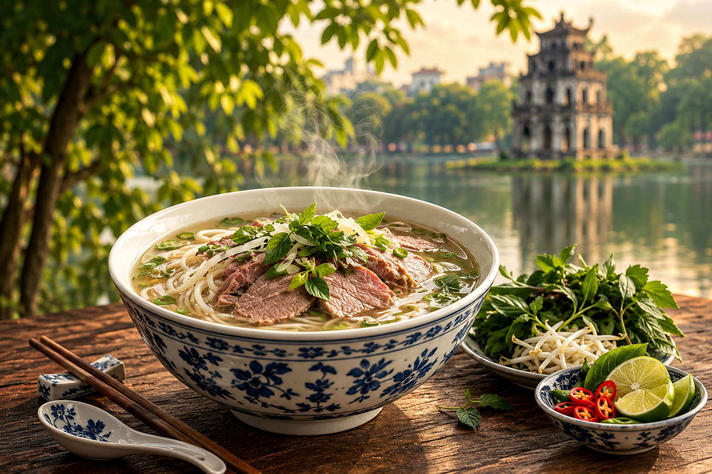
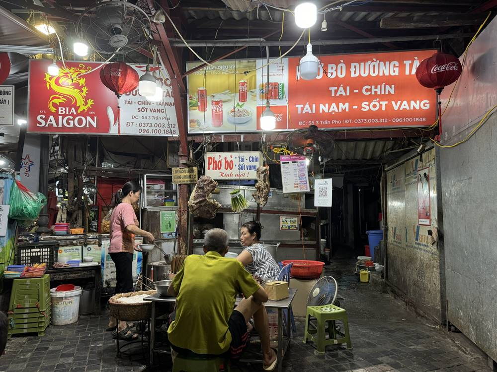
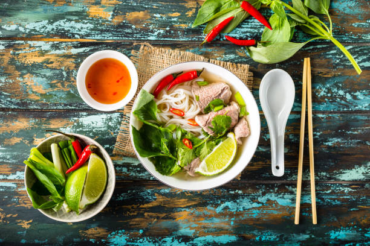
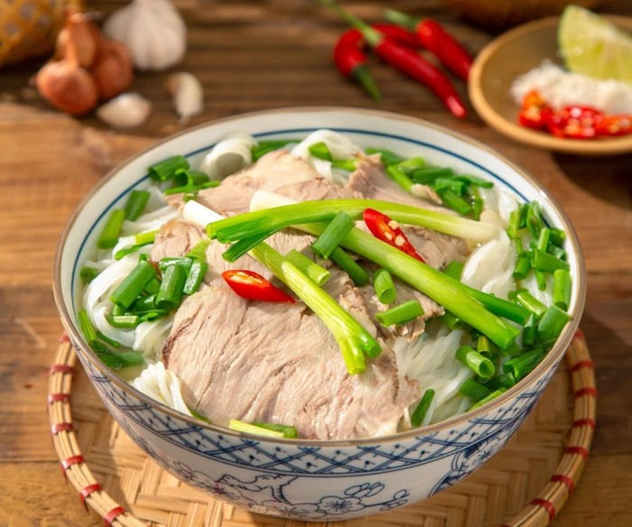

01
Tinh tế trong hương vị
Nước dùng trong, vị thanh, thơm từ những nguyên liệu được ninh kỹ.
PHỞ TRONG VĂN HOÁ
Không chỉ là một món ăn, phở đã trở thành một phần ký ức, nhịp sống và văn hoá của người Hà Nội.
Khám phá câu chuyện →VĂN HOÁ ẨM THỰC
Phở là một trong những biểu tượng đặc trưng của ẩm thực Hà Nội. Một bát phở giản dị nhưng chứa đựng câu chuyện về con người, phố phường và những giá trị được truyền qua nhiều thế hệ.
Từ những hàng phở nhỏ bên vỉa hè đến những căn bếp gia đình, phở đã trở thành một phần quen thuộc trong đời sống của người Hà Nội.
Tìm hiểu thêm →
GIÁ TRỊ VĂN HOÁ
Một bát phở có thể bắt đầu ngày mới, kết nối những cuộc gặp gỡ và lưu giữ những ký ức rất riêng của Hà Nội.
Nước dùng trong, vị thanh, thơm từ những nguyên liệu được ninh kỹ.
Phở xuất hiện trong những buổi gặp gỡ, câu chuyện và khoảnh khắc đời thường.
Từ một món ăn địa phương, phở đã trở thành hình ảnh quen thuộc của Hà Nội.

PHỞ TRONG ĐỜI SỐNG
Những hàng phở nhỏ bên vỉa hè là một phần không thể thiếu trong nhịp sống Hà Nội. Buổi sáng, người Hà Nội ngồi bên chiếc ghế thấp, thưởng thức một bát phở nóng giữa âm thanh quen thuộc của phố phường.
Chính sự giản dị ấy tạo nên một nét văn hoá rất riêng – gần gũi, chân thành nhưng tinh tế.
Khám phá di sản →
BẢN SẮC HÀ NỘI
Qua thời gian, phở không chỉ giữ được hương vị truyền thống mà còn trở thành một hình ảnh đại diện cho văn hoá ẩm thực Hà Nội.
Mỗi bát phở là sự kết hợp giữa nguyên liệu, kỹ thuật chế biến và ký ức của những con người đã gìn giữ món ăn này qua năm tháng.
Đọc câu chuyện →